Prueba 1 · Comprensión de lectura 25 题 · 即时判分
点选项 → 「确认作答」→ 立即判定并显示正确答案与解析；填空题手写输入后按回车即可。 进度自动保存在本机浏览器，随时可继续。
Usted va a leer el correo electrónico que Marta ha escrito a su amiga Carmen. A continuación, conteste a las preguntas (de la 1 a la 5). Seleccione la opción correcta (A, B o C).
- 1Marta escribe a Carmen para…
- Apreguntarle por la zapatería.
- Bdecirle que está de vacaciones.
- Cquedar para hablar un rato.
看解析
正确答案：C · quedar para hablar un rato. - 2En el texto se dice que Marta…
- Avive en una casa nueva.
- Bantes era vecina de Paula.
- Cestá contenta en su barrio.
看解析
正确答案：B · antes era vecina de Paula. - 3Según el texto, ahora Paula…
- Agana más dinero que antes.
- Btrabaja en otra empresa.
- Cnecesita un coche nuevo.
看解析
正确答案：A · gana más dinero que antes. - 4En el texto se dice que Ahmed…
- Ava a ir de vacaciones a Rabat.
- Btrabaja hasta el mes de septiembre.
- Cquiere decir adiós a sus amigos.
看解析
正确答案：C · quiere decir adiós a sus amigos. - 5Marta quiere ir a Huelva porque…
- Asu hermana se va a casar allí.
- Bsu tía la ha invitado a su casa.
- Csus sobrinos van a ir unos días.
看解析
正确答案：B · su tía la ha invitado a su casa.
Usted va a leer ocho anuncios. A continuación, responda a las preguntas (de la 6 a la 13). Seleccione la opción correcta (A, B o C).
ALa opción correcta es la letra A porque el billete solo vale para el día que se compra.- Asolo se puede usar un día.
- Btiene un precio único.
- Ces necesario para todos.
- TEXTO 1 — ANUNCIOS DE HABITACIONES Y PISOSSe necesita compañero de piso para una habitación grande, exterior, con mucha luz en una casa para tres personas con un baño, cocina y comedor grande. Mejor un estudiante, como nosotros. No queremos parejas. Sin mascotas porque ya hay un perro. Ven a verlo. Llama al 984 65 8334 para hablar del precio.6En el anuncio se dice que…
- Abuscan a dos personas para un piso.
- Bprefieren compartir con un estudiante.
- Calquilan un piso para tres personas.
看解析
正确答案：B · prefieren compartir con un estudiante. - TEXTO 2 — MERCADO DE SAN ESTEBANDespués del descanso del verano para hacer cambios, abrimos de nuevo el 15 de septiembre con más luz, nueva decoración y nuestras carnicerías, fruterías, pescaderías y tiendas de siempre. E igual de baratas que antes. Abrimos más tiempo: de 8:00 a 19:00. Estamos en el número 15 de la calle Embajadores. Metro La Latina. Autobuses 12, 78, 27 y 91.7Según el texto, este mercado ahora tiene…
- Atiendas nuevas.
- Bun horario diferente.
- Cmejores precios.
看解析
正确答案：B · un horario diferente. - TEXTO 3 — BUSCAMOS PERSONALCadena de tiendas de camisetas necesita dependientes para varias tiendas de Madrid. Horario de 9 a 15 h todos los días excepto domingos. Para empezar en junio. Entrevistas durante el mes de mayo en las oficinas de la calle Guatemala, 10. Llamar al 91 300 00 00 o escribir a deportes@muguruza.es. Damos un curso antes de empezar, pero buscamos personas que ya han trabajado antes en tiendas.8En el anuncio se dice que…
- Asolo llaman a personas con formación.
- Bel trabajo es en la calle Guatemala.
- Cbuscan a personas para vender ropa.
看解析
正确答案：C · buscan a personas para vender ropa. - TEXTO 4 — COMPRE EN GALERÍAS AMARILLASVenga a Galerías Amarillas. Desde hoy hasta el domingo tenemos toda la ropa de hombre un 50% más barata. Y para los más pequeños, hoy tenemos la nueva ropa de verano a un precio muy bueno. Si algo no le gusta, puede cambiarlo por otro producto del mismo precio. Y esta semana, por una compra de 60€, le invitamos a merendar en nuestra cafetería.9En el texto se dice que…
- Apuede pagar menos durante varios días.
- Bsi no quiere su compra, te devuelven el dinero.
- Chay precios especiales en la cafetería.
看解析
正确答案：A · puede pagar menos durante varios días. - TEXTO 5 — INFORMACIÓN PARA PASAPORTESPara nuevos pasaportes, horario de 9 a 14 h. Tiene que traer fotocopia de su pasaporte anterior y dos fotografías a color tamaño carnet de hace menos de dos años (en la oficina no hay máquina de fotos), y completar el formulario con sus datos. Puede pedir cita por internet o en la oficina de pasaportes de 8 a 21 h.10Si necesita un nuevo pasaporte, tiene que…
- Allevar con usted dos fotos personales.
- Bponer sus datos en la página de internet.
- Cdarles el pasaporte que usaba antes.
看解析
正确答案：A · llevar con usted dos fotos personales. - TEXTO 6 — HORARIO PARA HABLAR CON LOS PROFESORESA continuación pueden ver los horarios de los profesores para hablar con los padres. Les recordamos que para hablar con los profesores tienen que pedirlo por teléfono o correo a Secretaría en su horario habitual de 8 a 11 h. 1º A — Profesor ALFONSO BERNARDO: jueves de 16 a 17 h. 1º B — Profesora ROSANA VALLE: jueves de 17 a 18 h. 1º C — Profesora CAROLINA GONZÁLEZ: lunes de 16 a 17 h.11Los padres pueden hablar con los profesores…
- Apor la mañana o la tarde.
- Bsi antes piden cita.
- Cpor teléfono o correo.
看解析
正确答案：B · si antes piden cita. - TEXTO 7 — CENTRO DE ATENCIÓN AL INMIGRANTECentro de atención al inmigrante situado en la calle Casino, número 25. Tenemos cursos de español y actividades deportivas, y nuestros profesores pueden ayudarte con los estudios. También tenemos abogados y ayudamos a buscar trabajo. Y si necesitas piso, puedes consultar los anuncios que hay en el pasillo.12En este centro…
- Ase dan clases de lengua.
- Btienen pisos para inmigrantes.
- Cnecesitan trabajadores.
看解析
正确答案：A · se dan clases de lengua. - TEXTO 8 — NOTICIAS PARA LOS VECINOS DE PARLORAEl Ayuntamiento de Parlora va a abrir un centro para mayores en la Plaza Mayor. El centro va a tener una ambulancia para poder llevar a los mayores al hospital más cercano, que está a quince kilómetros del pueblo. Los vecinos han pedido un nuevo hospital más cerca del centro de la ciudad, porque es una necesidad y porque estos centros dan trabajo a médicos, enfermeras y personal de atención al público.13En el texto se dice que…
- Aahora hay un hospital nuevo cerca de Parlora.
- Ben Parlora van a tener una ambulancia más.
- Cse busca personal para un centro de mayores.
看解析
正确答案：B · en Parlora van a tener una ambulancia más.
Usted va a leer tres textos de tres españolas que hablan de su experiencia de trabajo fuera de España. Relacione las preguntas (14 - 19) con los textos (A, B o C).
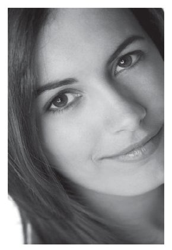
AALICIA — Hace tres años, mi hermana me habló de unos amigos suyos españoles que estaban en Amsterdam y querían una chica para cuidar a sus dos hijos. No lo pensé y me fui a Holanda. Me pagaban muy poco pero comía y dormía gratis. Los primeros meses no tenía amigos porque no hablaba el idioma, solo un poco de inglés. Por las mañanas iba a clases de holandés e inglés y allí conocí a un chico que era profesor de la escuela. Dos años más tarde, nos casamos y tuvimos un hijo. Ahora hablo holandés y trabajo en una tienda de ropa en Amsterdam.- BEVA — Yo vine a Suecia hace un año. Soy informática y tenía trabajo en España en una oficina de ayuda internacional, pero solo para tres meses. Ya llevaba un tiempo pensando en salir fuera del país para trabajar pero no sabía dónde. Mi amigo Lucas me ayudó a elegir Suecia porque él vivió aquí y me contó mucho de este país. Busqué trabajo por internet, pero solo miraba las ofertas donde no pedían sueco porque yo solo hablo inglés. Tuve mucha suerte y encontré un trabajo en otra empresa parecida donde hay personas de muchos países y solo se habla inglés. Ahora quiero empezar a estudiar sueco.
- CSILVIA — Yo estudié para ser cocinera y sabía que quería irme a conocer otros países. Quería estudiar inglés y me fui a EE.UU. a una escuela en verano. Fue una buena experiencia porque cambió toda mi vida. El padre de un compañero, cuando se enteró de que yo era cocinera, me presentó a un amigo suyo que tenía un restaurante muy famoso en Chicago y me preguntó si quería trabajar en su restaurante. Fue difícil tener el permiso de trabajo pero cuando me lo dieron, empecé a trabajar y aprendí muchísimo. Hoy tengo dos restaurantes en EE.UU.
- 14¿Quién no necesita hablar el idioma del país en su trabajo?
- A
- B
- C
看解析
正确答案：B EVA — Yo vine a Suecia hace un año. Soy informática y tenía trabajo en España en una oficina de ayuda internacional, pero solo para tres meses. Ya llevaba un tiempo pensando en salir fuera del país para trabajar pero no sabía dónde. Mi amigo Lucas me ayudó a elegir Suecia porque él vivió aquí y me contó mucho de este país. Busqué trabajo por internet, pero solo miraba las ofertas donde no pedían sueco porque yo solo hablo inglés. Tuve mucha suerte y encontré un trabajo en otra empresa parecida donde hay personas de muchos países y solo se habla inglés. Ahora quiero empezar a estudiar sueco. - 15¿Quién no tenía que pagar el alojamiento?
- A
- B
- C
看解析
正确答案：A ALICIA — Hace tres años, mi hermana me habló de unos amigos suyos españoles que estaban en Amsterdam y querían una chica para cuidar a sus dos hijos. No lo pensé y me fui a Holanda. Me pagaban muy poco pero comía y dormía gratis. Los primeros meses no tenía amigos porque no hablaba el idioma, solo un poco de inglés. Por las mañanas iba a clases de holandés e inglés y allí conocí a un chico que era profesor de la escuela. Dos años más tarde, nos casamos y tuvimos un hijo. Ahora hablo holandés y trabajo en una tienda de ropa en Amsterdam. - 16¿Quién tenía un amigo que le habló de ese país?
- A
- B
- C
看解析
正确答案：B EVA — Yo vine a Suecia hace un año. Soy informática y tenía trabajo en España en una oficina de ayuda internacional, pero solo para tres meses. Ya llevaba un tiempo pensando en salir fuera del país para trabajar pero no sabía dónde. Mi amigo Lucas me ayudó a elegir Suecia porque él vivió aquí y me contó mucho de este país. Busqué trabajo por internet, pero solo miraba las ofertas donde no pedían sueco porque yo solo hablo inglés. Tuve mucha suerte y encontré un trabajo en otra empresa parecida donde hay personas de muchos países y solo se habla inglés. Ahora quiero empezar a estudiar sueco. - 17¿A quién le presentaron a una persona que le dio trabajo en ese país?
- A
- B
- C
看解析
正确答案：C SILVIA — Yo estudié para ser cocinera y sabía que quería irme a conocer otros países. Quería estudiar inglés y me fui a EE.UU. a una escuela en verano. Fue una buena experiencia porque cambió toda mi vida. El padre de un compañero, cuando se enteró de que yo era cocinera, me presentó a un amigo suyo que tenía un restaurante muy famoso en Chicago y me preguntó si quería trabajar en su restaurante. Fue difícil tener el permiso de trabajo pero cuando me lo dieron, empecé a trabajar y aprendí muchísimo. Hoy tengo dos restaurantes en EE.UU. - 18¿Quién fue a ese país para aprender el idioma?
- A
- B
- C
看解析
正确答案：C SILVIA — Yo estudié para ser cocinera y sabía que quería irme a conocer otros países. Quería estudiar inglés y me fui a EE.UU. a una escuela en verano. Fue una buena experiencia porque cambió toda mi vida. El padre de un compañero, cuando se enteró de que yo era cocinera, me presentó a un amigo suyo que tenía un restaurante muy famoso en Chicago y me preguntó si quería trabajar en su restaurante. Fue difícil tener el permiso de trabajo pero cuando me lo dieron, empecé a trabajar y aprendí muchísimo. Hoy tengo dos restaurantes en EE.UU. - 19¿Quién conoció a su pareja en ese país?
- A
- B
- C
看解析
正确答案：A ALICIA — Hace tres años, mi hermana me habló de unos amigos suyos españoles que estaban en Amsterdam y querían una chica para cuidar a sus dos hijos. No lo pensé y me fui a Holanda. Me pagaban muy poco pero comía y dormía gratis. Los primeros meses no tenía amigos porque no hablaba el idioma, solo un poco de inglés. Por las mañanas iba a clases de holandés e inglés y allí conocí a un chico que era profesor de la escuela. Dos años más tarde, nos casamos y tuvimos un hijo. Ahora hablo holandés y trabajo en una tienda de ropa en Amsterdam.
Usted va a leer un texto del blog Historias de Madrid, de Manuel García. A continuación, conteste a las preguntas (de la 20 a la 25). Seleccione la opción correcta (A, B o C).
- 20Según el texto, Manuel empezó el blog porque…
- Atrabajaba como historiador en Madrid.
- Bantes trabajaba escribiendo en internet.
- Cno le gustaba su trabajo anterior.
看解析
正确答案：B · antes trabajaba escribiendo en internet. - 21En el texto se dice que el autor…
- Apaseaba mucho cuando llegó a Madrid.
- Bviajó alguna vez a Madrid antes de vivir allí.
- Cleyó libros sobre Madrid antes de llegar.
看解析
正确答案：A · paseaba mucho cuando llegó a Madrid. - 22Según Manuel, en su blog…
- Ahace preguntas a la gente que lo lee.
- Bpone lo que lee y ve sobre Madrid.
- Cescriben también otras personas.
看解析
正确答案：B · pone lo que lee y ve sobre Madrid. - 23En el texto se dice que, gracias al blog, Manuel…
- Ase ha hecho famoso.
- Bgana bastante dinero.
- Cconoce sitios especiales.
看解析
正确答案：C · conoce sitios especiales. - 24Según el texto, Manuel quiere…
- Ahacer cosas diferentes en su blog.
- Bescribir un libro sobre otra ciudad.
- Ctrabajar un tiempo en una librería.
看解析
正确答案：A · hacer cosas diferentes en su blog. - 25En el texto se dice que Manuel…
- Atiene otro blog con un amigo.
- Bestá preparando un nuevo libro.
- Cantes escribía sobre fútbol.
看解析
正确答案：C · antes escribía sobre fútbol.
Prueba 2 · Comprensión auditiva 25 题 · 即时判分
先点每题（或每个 Tarea）的播放键听录音，再选答案 → 「确认作答」立即判定。 每个 Tarea 有一段完整录音，可反复播放；右上角可调播放速度。听力与阅读共用一张答题卡， 题号接续为第 26–50 题（真题中 Prueba 2 是独立编号 1–25，这里为了统一答题卡顺延）。
Usted va a escuchar seis conversaciones. Escuchará cada conversación dos veces. Después, tiene que contestar a las preguntas (1 - 6). Seleccione la opción correcta (A, B o C).
CEn las habitaciones del hotel hay champú.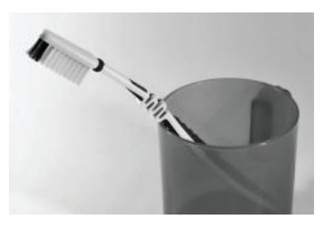
A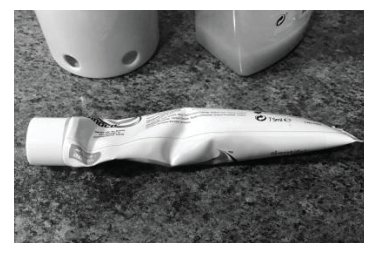
B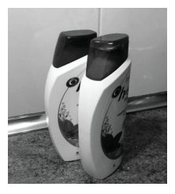
C
- 26¿Qué tiene ya el hombre?
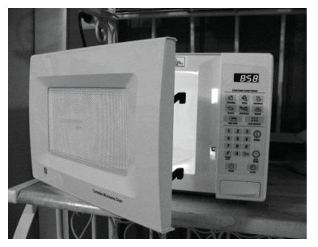
A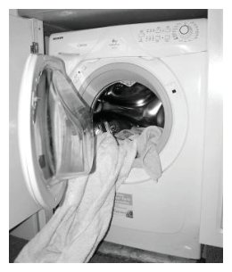
B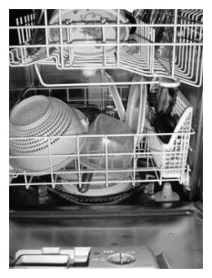
C
看解析
正确答案：A - 27¿Qué le duele al hombre?
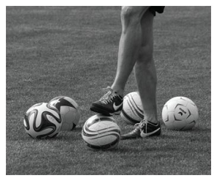
A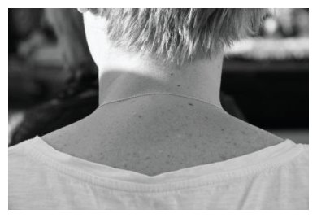
B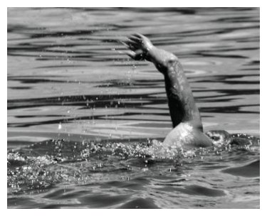
C
看解析
正确答案：C - 28¿Qué compra la mujer?
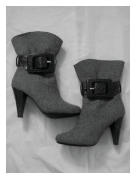
A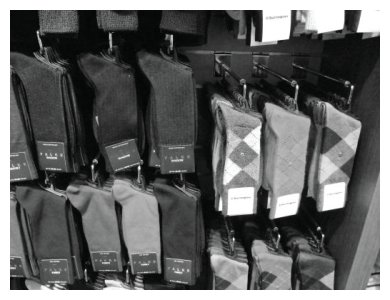
B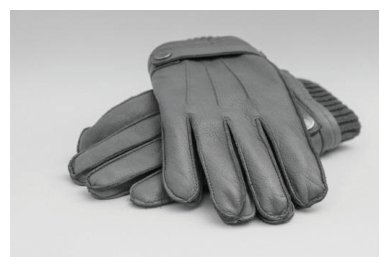
C
看解析
正确答案：B - 29¿Qué ha hecho ya la mujer en la ciudad?
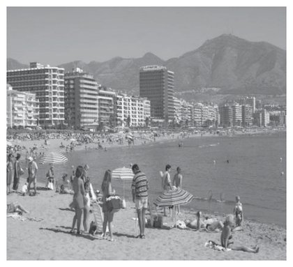
A- B
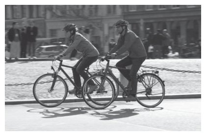
C
看解析
正确答案：B - 30¿Qué necesita la mujer?
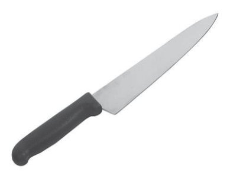
A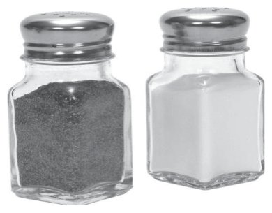
B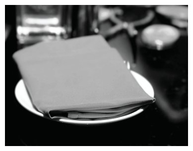
C
看解析
正确答案：C - 31¿Dónde trabaja ahora el hombre?
- A
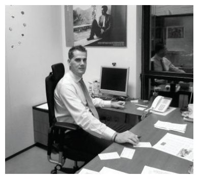
B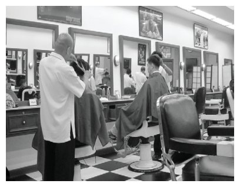
C
看解析
正确答案：C
查看听力原文 Transcript（建议作答后再看）
Mujer:Buenos días, ¿en qué puedo ayudarle?
Hombre:Necesito algunas cosas para mi nueva casa, y creo que tienen los lavaplatos más baratos hoy.
Mujer:Los lavaplatos están al precio de siempre, pero las lavadoras sí están más baratas.
Hombre:Ah, bueno… pues también necesito una. El lavaplatos ya lo compro otro día.
Mujer:También los microondas cuestan hoy un 20 por ciento menos.
Hombre:Pero microondas tengo uno nuevo. Voy a ver las lavadoras.
Voz Del Narrador:Conteste a la pregunta número uno: ¿Qué tiene ya el hombre?
Mujer:Buenas tardes. Dígame, ¿qué le pasa? ¿Sus dolores de cuello otra vez?
Hombre:No, esta vez no. Me duele mucho el brazo derecho, y no sé por qué.
Mujer:Quizá es, como su problema de espalda y cuello, por estar 8 horas al día en el ordenador.
Hombre:¿Sí? Es que el otro día fui a nadar, y pensaba que quizá era por eso. Como normalmente solo hago ejercicio con las piernas: juego al fútbol, corro...
Mujer:No necesariamente. La natación es buena para usted.
Voz Del Narrador:Conteste a la pregunta número dos: ¿Qué le duele al hombre?
Hombre:Buenas tardes, ¿qué desea?
Mujer:Quería ver esas botas negras que me encantan… ¿Tiene un 39?
Hombre:Mmhh, solo nos quedan números pequeños, pero tenemos más modelos.
Mujer:Vaya, no gracias, me gustaban esas. Necesito también unos calcetines para mi hijo.
Hombre:¿Le gustan aquellos que están al lado de los guantes?
Mujer:Sí, esos, los marrones con rayas. Me los llevo ¿Cuánto cuestan?
Voz Del Narrador:Conteste a la pregunta número tres: ¿Qué compra la mujer?
Mujer:Buenos días, he llegado con mi familia hace unos días a la ciudad y nos gustaría saber qué podemos hacer aquí.
Hombre:¿Qué tipo de actividades les interesa más?
Mujer:Nos gustaría hacer algo divertido con los niños.
Hombre:El parque de atracciones es uno de los lugares más visitados.
Mujer:Estuvimos ayer y nos encantó. Hoy íbamos a ir a la playa pero como no hace mucho sol...
Hombre:Bueno, pues pueden visitar la ciudad en bicicleta, nosotros las alquilamos.
Mujer:Estupendo.
Voz Del Narrador:Conteste a la pregunta número 4: ¿Qué ha hecho ya la mujer en la ciudad?
Mujer:Este plato está muy rico. Ya me dijo mi hermana que era un buen restaurante.
Hombre:Bastante bueno. Pero voy a pedir otro cuchillo porque este no corta. Quizás necesita un poco de sal. ¿Me la pasas, por favor?
Mujer:Toma. Si le vas a pedir un cuchillo, ¿le puedes pedir también una servilleta?
Hombre:Sí, a ver si viene el camarero y le pido todo.
Voz Del Narrador:Conteste a la pregunta número cinco: ¿Qué necesita la mujer?
Mujer:Entonces, ¿trabajas en una fábrica?
Hombre:Eso era antes, la fábrica donde trabajaba cerró.
Mujer:¡Anda! ¿Y qué hiciste?
Hombre:Bueno, me dieron un dinero y abrí una peluquería. Podía haber buscado otro trabajo, pero no me veía todo el día en una oficina y preferí usar el dinero para esto.
Voz Del Narrador:Conteste a la pregunta número seis: ¿Dónde trabaja ahora el hombre?
Usted va a escuchar seis anuncios o fragmentos de un programa de radio y tiene que responder a seis preguntas. Cada audición se repite dos veces. Lea las preguntas (de la 7 a la 12) y seleccione la opción correcta (A, B o C).
ALa opción correcta es la A porque los cursos son en horario de tarde y noche.- 32La Oficina de Turismo…
- Aestá abierta desde hace un año.
- Bya tiene diez oficinas en España.
- Cbusca trabajadores para este año.
看解析
正确答案：A · está abierta desde hace un año. - 33El programa La semana de Radio Clave…
- Ase puede escuchar todos los días.
- Bse hace hoy por primera vez.
- Cha cambiado el horario que tenía.
看解析
正确答案：C · ha cambiado el horario que tenía. - 34Los cursos de español son…
- Ade 10 a 12 de la mañana.
- Ben la Casa de Cultura.
- Cpara niños y jóvenes.
看解析
正确答案：C · para niños y jóvenes. - 35La presentadora dice que hoy…
- Ael público puede hacer preguntas.
- Bhablan de los horarios del colegio.
- Cvan a llamar por teléfono al invitado.
看解析
正确答案：A · el público puede hacer preguntas. - 36En el anuncio se dice que el hipermercado La Pradera…
- Atiene precios especiales esta semana.
- Bes más barato si compras por internet.
- Cte puede llevar la compra a casa gratis.
看解析
正确答案：A · tiene precios especiales esta semana. - 37En el programa Vida cotidiana van a hablar de…
- Alos precios de los pisos en Madrid.
- Blos mejores barrios para vivir en Madrid.
- Cdónde encontrar pisos para compartir.
看解析
正确答案：B · los mejores barrios para vivir en Madrid.
查看听力原文 Transcript（建议作答后再看）
Mujer:Salsa, merengue, tango, vals… Aprender estos bailes de manera fácil y divertida es posible ahora en “Son latino”, el salón de baile de Pablo Molina. Con más de 20 años como profesor de baile, Pablo da cursos de lunes a sábado en horario de tarde y noche. Puedes hacer cursos individuales o en grupo. ¡Te esperamos!
Voz Del Narrador:Conteste a la pregunta número 0.
Hombre:La directora de la Oficina de Turismo habló ayer sobre cómo ha sido el primer año de la Oficina. La Oficina recibió este año 6000 personas y el año que viene espera a 8000, pues van a abrir diez oficinas más en toda España. Actualmente la Oficina de Turismo tiene 20 trabajadores especializados en turismo.
Voz Del Narrador:Conteste a la pregunta número 7.
Mujer:¡Buenas tardes y bienvenidos a La semana de Radio Clave! Hoy empezamos una nueva etapa.
Voz Del Narrador:Conteste a la pregunta número 8.
Hombre:La Casa de Cultura de Fuente Vaqueros tiene cursos de español para menores de 21 años durante los meses de julio y agosto. Las clases se van a dar en la escuela pública García Lorca, en horario de mañana o tarde. Más información en la oficina de información del Ayuntamiento, de 10 a 12 de la mañana.
Voz Del Narrador:Conteste a la pregunta número 9.
Mujer:Bienvenidos a Tardes de verano, en Radio Local. Hoy vamos a hablar con el profesor Alejandro Valló sobre un tema que preocupa en muchas familias: ¿cuándo hay que comprar el primer teléfono móvil a nuestros hijos? ¿Deben usarlo en el colegio? ¿Cuánto tiempo al día? Si quieren hacer preguntas a nuestro invitado, pueden empezar a llamarnos.
Voz Del Narrador:Conteste a la pregunta número 10.
Hombre:A partir de hoy, lunes, los precios más bajos del mercado en el hipermercado La Pradera. Todo, un 50% más barato ¡Y solo hasta el domingo! No espere más, venga hoy a nuestra tienda de la calle Cervantes 22, o compre en nuestra página www.hiperlapradera.com. Y se lo llevamos a casa en menos de 24 horas.
Voz Del Narrador:Conteste a la pregunta número 11.
Mujer:En nuestra sección de Vida cotidiana vamos a ver cómo encontrar un buen lugar para vivir en Madrid. ¿Qué barrios son más baratos? ¿Cuáles tienen más servicios y están mejor comunicados? ¿Qué mes es mejor para buscar piso? ¿Es mejor compartir que comprar o alquilar un piso?
Voz Del Narrador:Conteste a la pregunta número 12.
Usted va a escuchar una conversación entre dos amigos, Manuel y Olga. Indique si los enunciados (13 - 18) se refieren a Manuel (A), a Olga (B) o a ninguno de los dos (C). Escuchará la conversación dos veces.
AManuel dice: «primero voy a la compra… ¿vienes conmigo al supermercado?»- AMANUEL
- BOLGA
- CNINGUNO DE LOS DOS
- 38Tiene un examen pronto.
- A
- B
- C
看解析
正确答案：C NINGUNO DE LOS DOS - 39Va a ir a la frutería.
- A
- B
- C
看解析
正确答案：B OLGA - 40Le encanta la paella.
- A
- B
- C
看解析
正确答案：B OLGA - 41Hace comida muy rica.
- A
- B
- C
看解析
正确答案：A MANUEL - 42Va a pagar la cuenta del restaurante.
- A
- B
- C
看解析
正确答案：C NINGUNO DE LOS DOS - 43Ha ido al banco.
- A
- B
- C
看解析
正确答案：A MANUEL
查看听力原文 Transcript（建议作答后再看）
Manuel:¡Hola, Olga! ¿Cómo estás?
Olga:Bien, bien, ¿y tú? ¿Vas ya para casa?
Manuel:No, primero voy a la compra. Oye, ¿vienes conmigo al supermercado? Tengo que comprar muchas cosas y no voy a poder con todo.
Olga:¿Tiene que ser ahora? Es que he quedado con María José para ayudarla a estudiar inglés, porque mañana tiene un examen.
Manuel:¿Vas a casa de María José? ¿Podrías hacerme un favor y comprarme unas cosas en la frutería que está al lado?
Olga:Sí, claro, pero te lo llevo a tu casa ya por la tarde.
Manuel:Claro, no te preocupes. Muchas gracias.
Olga:Es que vamos a comer en un restaurante que hay cerca de su casa donde hacen una paella buenísima.
Manuel:Ah, muy bien, tu plato favorito. Tienes que venir un día a casa y te preparo algo. No te digo una paella, porque el arroz no es mi mejor plato, pero cualquier otra cosa.
Olga:¡Pero si cocinas de manera increíble!
Manuel:Un día de estos, vienes. Bueno, la compra: necesito un kilo de tomates, un kilo de manzanas y otro de plátanos. Toma, que te doy el dinero.
Olga:Vale. Te iba a decir que ya me lo pagas luego, pero es que no llevo ni un euro.
Manuel:Si quieres, te doy más y luego me lo devuelves. Si tienes que ir a un restaurante…
Olga:Bueno, me va a invitar María José por ayudarla a estudiar pero, si me dejas un poco, puedo pagar después un café. Tengo que pasar por el banco, pero nunca tengo tiempo.
Manuel:No te preocupes, yo fui ayer y saqué bastante dinero.
Narrador:[5 segundos] [Se repite la conversación] [3 segundos]
Voz Del Narrador:Complete ahora la Hoja de respuestas.
Narrador:[30 segundos]
Usted va a escuchar ocho mensajes, incluido el ejemplo. Cada mensaje se repite dos veces. Seleccione el enunciado (de la A a la K) que corresponde a cada mensaje (del 19 al 25). Hay once opciones, incluido el ejemplo. Seleccione siete.
FLa opción correcta es la letra F porque llaman de la consulta del Doctor Centeno.- AEl tren va a estar parado 30 minutos.
- BPueden usar otro transporte sin pagar.
- CSe puede comer o beber algo.
- DLa cita es a las dos.
- EEstán buscando a una familia.
- FTiene una cita con el médico.
- GLos coches tienen que ir por otro camino.
- HNo se puede usar el teléfono.
- IVa a ir a su casa después del cine.
- JVa a llegar tarde al trabajo.
- KHoy el precio es más barato.
- 44Mensaje 1
- A
- B
- C
- D
- E
- F
- G
- H
- I
- J
- K
看解析
正确答案：B Pueden usar otro transporte sin pagar. - 45Mensaje 2
- A
- B
- C
- D
- E
- F
- G
- H
- I
- J
- K
看解析
正确答案：H No se puede usar el teléfono. - 46Mensaje 3
- A
- B
- C
- D
- E
- F
- G
- H
- I
- J
- K
看解析
正确答案：G Los coches tienen que ir por otro camino. - 47Mensaje 4
- A
- B
- C
- D
- E
- F
- G
- H
- I
- J
- K
看解析
正确答案：C Se puede comer o beber algo. - 48Mensaje 5
- A
- B
- C
- D
- E
- F
- G
- H
- I
- J
- K
看解析
正确答案：I Va a ir a su casa después del cine. - 49Mensaje 6
- A
- B
- C
- D
- E
- F
- G
- H
- I
- J
- K
看解析
正确答案：E Están buscando a una familia. - 50Mensaje 7
- A
- B
- C
- D
- E
- F
- G
- H
- I
- J
- K
看解析
正确答案：J Va a llegar tarde al trabajo.
查看听力原文 Transcript（建议作答后再看）
Mujer:Este es un mensaje para Pedro Gómez. Llamo de la consulta del doctor Centeno. Hemos podido cambiar la hora de su visita y puede venir el jueves 5 a las seis de la tarde. Gracias.
Hombre:¡Atención, señores viajeros! Por un problema técnico en una de las líneas, los trenes están llegando media hora tarde a las estaciones. Esta mañana el servicio de autobuses es gratis. Esperamos solucionar el problema antes de las 15 horas. Consulten en sus móviles la información de la página web.
Voz Del Narrador:Elija la opción correcta.
Mujer:¡Señoras y señores! La obra de teatro va a empezar dentro de cinco minutos. No se puede comer ni beber, y los móviles tienen que estar apagados durante la obra. Tenemos un descanso de quince minutos a mitad de la función. Muchas gracias, y disfruten del espectáculo.
Voz Del Narrador:Elija la opción correcta.
Hombre:La Dirección General de Tráfico informa de que la carretera del Mediterráneo está cerrada por obras en el kilómetro 55. Pueden tomar la carretera nacional 323. Perdonen las molestias. Más información en nuestra página web o en el número de teléfono 21112.
Voz Del Narrador:Elija la opción correcta.
Mujer:Bienvenidos al tren a Villalba. Les informamos de que, durante las dos horas y media del viaje, van a poder ver la película La montaña amarilla y visitar la cafetería, donde pueden tomar café, infusiones, refrescos o bocadillos. ¡Buen viaje!
Voz Del Narrador:Elija la opción correcta.
Narrador:HOMBRE : Hola, papá. Nunca coges el móvil. Bueno, que estoy con mis amigos Javier y Luis tomando algo en el barrio y hemos comprado unas entradas para ver una película. Voy a llegar a cenar a las diez y media. Hasta luego, un beso.
Voz Del Narrador:Elija la opción correcta.
Mujer:¡Atención, señores clientes! En la sección de deportes de la quinta planta hay un niño de 6 años que se llama César y no sabe dónde están sus padres. Por favor, los padres del niño pueden preguntar en información.
Voz Del Narrador:Elija la opción correcta.
Hombre:Hola, Ernesto. Que no he oído el despertador esta mañana y no he podido coger el tren de las ocho y veinte. Dile a Raúl y a los demás de la oficina que no voy a llegar a la reunión, por favor. También hay que cambiar la hora de las dos citas de esta tarde.
Voz Del Narrador:Elija la opción correcta.
Prueba 3 · Expresión e interacción escritas 题目 + 范文
写作不自动判分。建议先在纸上或输入法里写一遍，再展开参考答案对照。范文仅为一种可行写法，非唯一标准。
Tarea 1entre 60 y 70 palabras
Un amigo le escribe para quedar la próxima semana. Conteste a su amigo. En el correo tiene que: saludar; decir qué ha hecho esta semana; explicar qué va a hacer la próxima semana; decir un día, un lugar y una hora para quedar; hacerle dos preguntas y despedirse.
参考答案 / Modelo de respuesta
Tarea 2entre 70 y 80 palabras
Elija solo una de las dos opciones. En cada opción tiene que tratar todos los puntos.